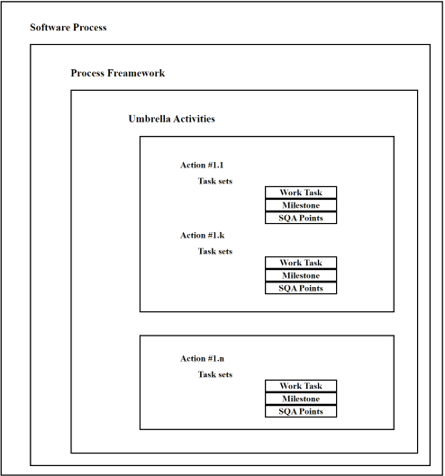

Software Process Framework
What is a Software Process Framework?
Software Process Framework details the steps and chronological order of a process. Since it serves as a foundation for them, it is utilized in most applications. Task sets, umbrella activities, and process framework activities all define the characteristics of the software development process. Software Process includes:
- Tasks: They focus on a small, specific objective.
- Action: It is a set of tasks that produce a major work product.
- Activities: Activities are groups of related tasks and actions for a major objective.

Process Framework Activities
The process framework is required for representing common process activities. Five framework activities are described in a process framework for software engineering. Communication, planning, modeling, construction, and deployment are all examples of framework activities. Each engineering action defined by a framework activity comprises a list of needed work outputs, project milestones, and software quality assurance (SQA) points.
- Communication: By communication, customer requirement gathering is done. Communication with consumers and stakeholders to determine the system’s objectives and the software’s requirements.
- Planning: Establish engineering work plan, describes technical risk, lists resources requirements, work produced and defines work schedule.
- Modeling: Architectural models and design to better understand the problem and to work towards the best solution. The software model is prepared by:
- Analysis of requirements
- Design
- Construction: Creating code, testing the system, fixing bugs, and confirming that all criteria are met. The software design is mapped into a code by:
- Deployment: In this activity, a complete or non-complete product or software is represented to the customers to evaluate and give feedback. On the basis of their feedback, we modify the product for the supply of better products.
Umbrella Activities
Umbrella Activities are that take place during a software development process for improved project management and tracking.
- Software project tracking and control: This is an activity in which the team can assess progress and take corrective action to maintain the schedule. Take action to keep the project on time by comparing the project’s progress against the plan.
- Risk management: The risks that may affect project outcomes or quality can be analyzed. Analyze potential risks that may have an impact on the software product’s quality and outcome.
- Software quality assurance: These are activities required to maintain software quality. Perform actions to ensure the product’s quality.
- Formal technical reviews: It is required to assess engineering work products to uncover and remove errors before they propagate to the next activity. At each level of the process, errors are evaluated and fixed.
- Software configuration management: Managing of configuration process when any change in the software occurs.
- Work product preparation and production: The activities to create models, documents, logs, forms, and lists are carried out.
- Reusability management: It defines criteria for work product reuse. Reusable work items should be backed up, and reusable software components should be achieved.
- Measurement: In this activity, the process can be defined and collected. Also, project and product measures are used to assist the software team in delivering the required software.